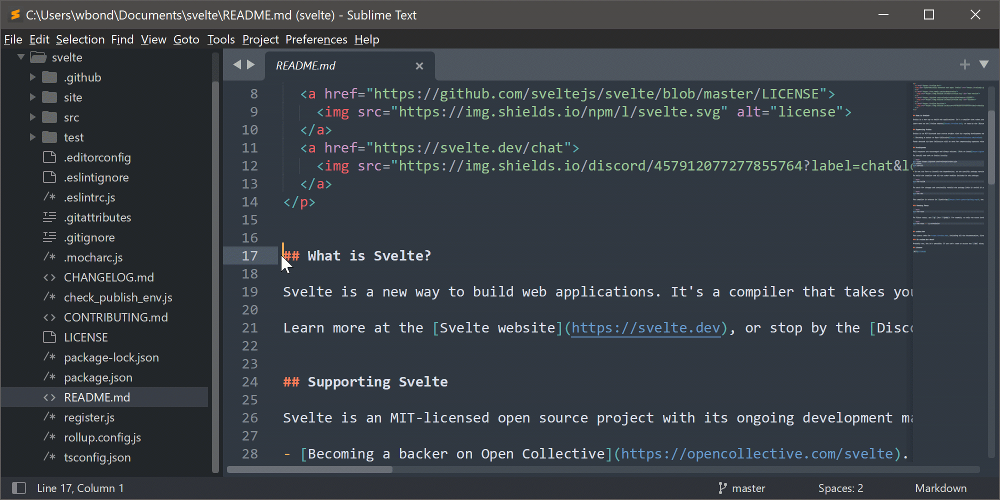

Sublime Text
Один из самых известных редакторов кода.
Его часто советуют новичкам как легкую
альтернативу IDE — среде разработки. Также этот редактор подходит программистам,
которые пишут на нескольких языках программирования и хотят
использовать один инструмент для всех задач.
А еще он полезен всем, кто занимается версткой и пишет тексты,
используя языки разметки.
Возможности редактора
Автодополнение
Sublime Text предлагает пользователю популярные варианты кода для продолжения записи. Такая функция упрощает программисту работу и уменьшает количество ошибок в коде.Сниппеты
Сниппеты в Sublime Text — это фрагменты кода или текстовые шаблоны, которые можно быстро вставить в код с помощью горячих клавиш. Они помогают ускорить написание кода и уменьшить количество повторяющихся действий. С помощью сниппетов вы можете вставить основные HTML-теги, CSS-селекторы, Git-команды. Также в Sublime Text можно создавать шаблоны для часто используемых блоков кода. Это, например, функции обработчика событий или цикла for. Потом их можно быстро вставлять в свой код.Гибкая настройка интерфейса
В Sublime Text можно менять внешний вид и функциональность. И речь не только о разных темах для оформления. Рабочую среду можно поделить на несколько областей, что позволяет одновременно работать с несколькими файлами и редактировать в них код.
Плагины
Возможности Sublime Text в исходном виде и так можно считать исчерпывающими для новичков. А опытные разработчики в дополнение к ним написали плагины. Некоторые из них бесплатные, другие — платные. Но с их помощью можно решить практически любую задачу. Например, есть плагины, позволяющие встроить в редактор кода функционал системы контроля версий или поделиться проектом и работать над ним совместно с другими пользователями.Интерфейс
- Проводник — чтобы быстро перемещаться между файлами внутри проекта.
- Поиск — для поиска конкретных слов внутри документа. Например, он
позволяет найти переменную везде, где она используется.
- Система управления версиями — предназначена для взаимодействия с Git,
просмотра изменений в коде и разных его версий.
- Запуск кода — позволяет запустить и проверить код на работоспособность.
- Расширения — каталог расширений, которые можно установить для добавления
в VS Code дополнительного функционала.
Другие элементы меняются в зависимости от того, какие расширения установлены.
Например, Docker для работы с контейнеризацией кода или
Jupyter для тех, кто хочет
заниматься Data Science и открывать нужные для этого файлы
прямо в VS Code.
При нажатии на одну из иконок между левой панелью и
окном с кодом открывается небольшое окно с возможностями этого элемента управления.
Недостатки
Меньший функционал
Sublime Text — самый легкий из всех редакторов кода. Но для этого его создателям пришлось пожертвовать предустановленными функциями. Многие конкуренты, например, Visual Studio Code, имеют больше встроенных решений. Правда, критичным недостатком это назвать нельзя: для всего необходимого можно поставить дополнительные плагины. Но их нужно будет найти и разобраться, а это лишняя трата времени на старте.Это не полноценная IDE
В качестве редактора кода Sublime Text заслуженно имеет армию поклонников. Но большинство из них рано или поздно меняют его на среду разработки. Кто-то считает, что лучше сразу начинать с профессиональных инструментов и привыкать к тому функционалу, который будет использоваться в дальнейшем. Альтернативное мнение — с редактором кода проще разобраться новичку, а сложности в программировании и без того хватает.